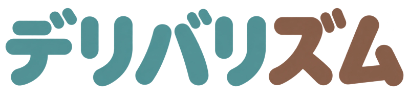
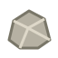
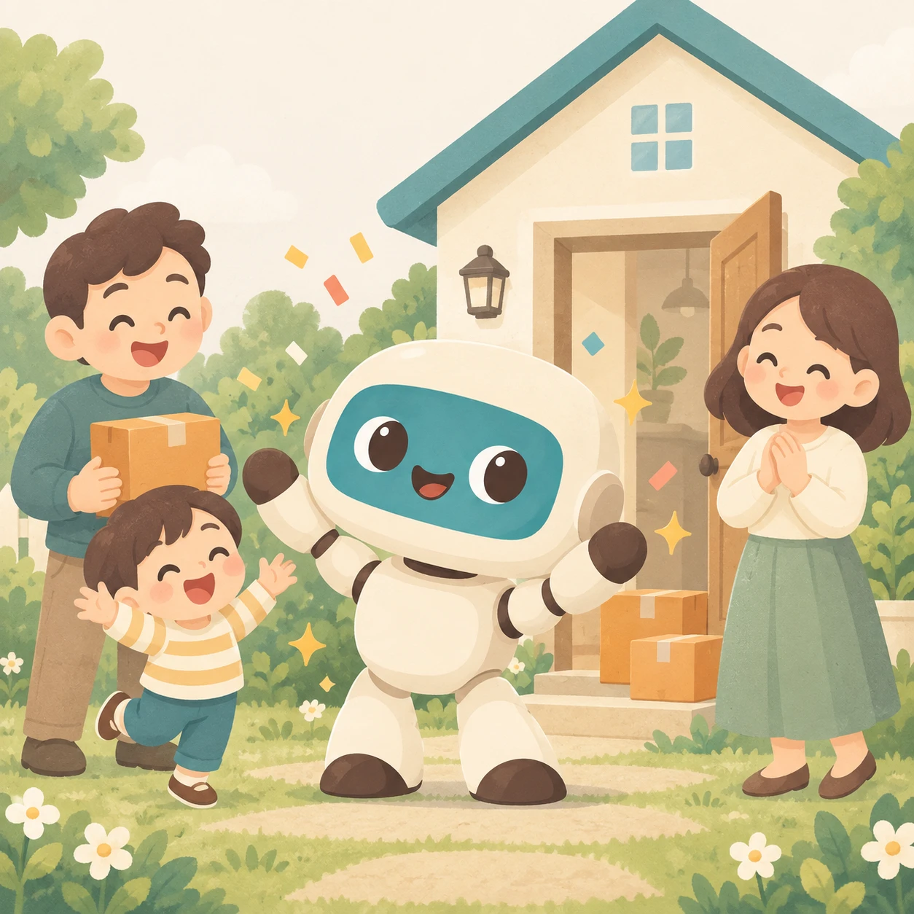

？
こえを使えません。タッチであそべます。
こえを再試行

こえで みちをつくって、おとどけ。
やさしい
むずかしい
つづきから
はじめから
つくる・あそぶ
▦
みちを じゅんびちゅう…
もういちど
タイトルへ
にもつ
とどけさき

とおれない
しじの じゅんばん
さいごに ついか
↑ うえ
↓ した
← ひだり
→ みぎ
ほすう
ついか
もどす
やりなおし
ヒント
オッケー
つづける
つぎのヒント
とじる（オッケー）
スタート
つぎ
つくる にもどる
おわり
ぜんぶ とどけた！

ありがとう！
みんなに えがおが とどいたよ。
タイトルへ